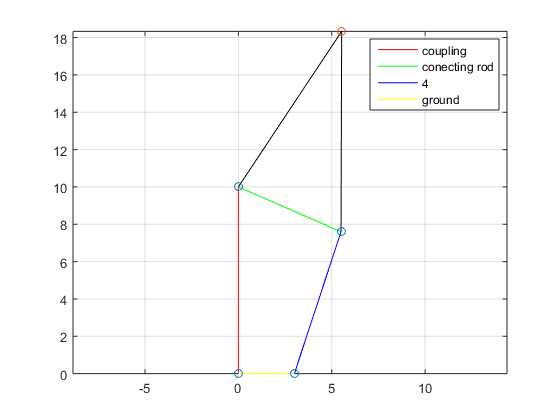
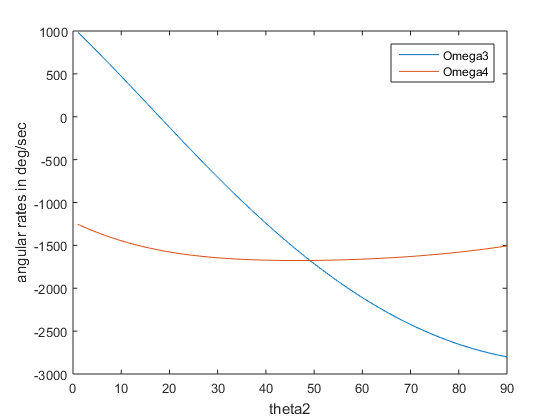
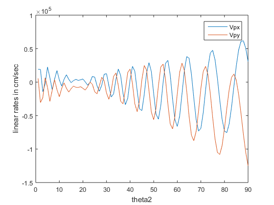

Contents
HW 6 #1, Walter Coe, 2-17-16
clear; clc;
Table P6-1 row c, pg. 328
lengths = [3 10 6 8];
omega2 = rad2deg(-15);
p = [10*cosd(80) 10*sind(80)];
Solve
[angles, angularRates, lengths, linearRates, points, p, vp] = four_bar_func([0 90 0 0],omega2,lengths,p,[1 0])
omega3_ = angularRates(3);
omega4_ = angularRates(4);
vpx = vp(1);
vpy = vp(2);
angles =
0 90.0000 -23.5814 71.7979
angularRates =
1.0e+03 *
0 -0.8594 -2.7994 -1.5060
lengths =
3 10 6 8
linearRates =
1.0e+04 *
0 0
0.8594 0
1.1445 -0.3763
0 0
points =
0 0
0 10.0000
5.4990 7.5997
3.0000 0
p =
5.5312 18.3310
vp =
1.0e+04 *
3.1917 -1.5484

Measure across theta2 range
theta2 = 0:1:90;
for i=1:length(theta2)
[angles, angularRates, lengths, linearRates, points, p, vp] = four_bar_func([0 theta2(i) 0 0],omega2,lengths,p,[0 0]);
omega3(i) = angularRates(3);
omega4(i) = angularRates(4);
Vpx(i) = vp(1);
Vpy(i) = vp(2);
V2(i) = linearRates(2);
end
Report
disp(['omega3 is: ', num2str(omega3_), ' degrees per second']);
disp(['omega4 is: ', num2str(omega4_), ' degrees per second']);
disp(['Vpx is: ', num2str(vp(1)), ' cm per second']);
disp(['Vpy is: ', num2str(vp(2)), ' cm per second']);
figure(2); clf;
plot(theta2, omega3, theta2, omega4);
legend('Omega3', 'Omega4');
xlabel('theta2')
ylabel('angular rates in deg/sec')
figure(3); clf;
plot(theta2, Vpx, theta2, Vpy);
legend('Vpx', 'Vpy');
xlabel('theta2')
ylabel('linear rates in cm/sec')
omega3 is: -2799.4495 degrees per second
omega4 is: -1505.9711 degrees per second
Vpx is: 30741.3203 cm per second
Vpy is: -124840.0769 cm per second
 